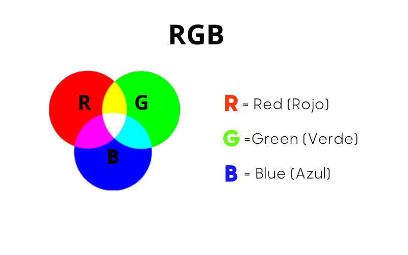
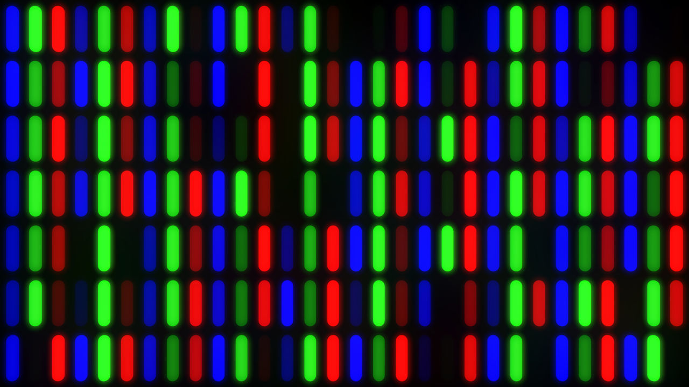
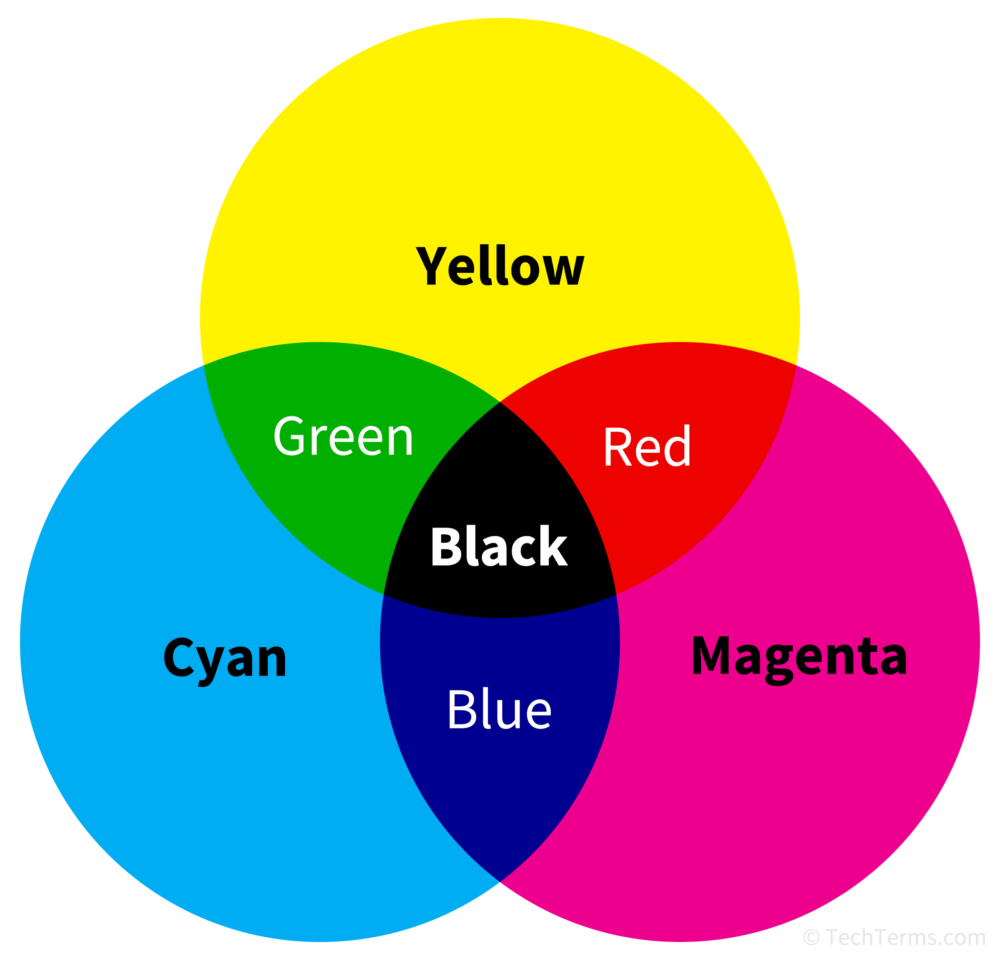
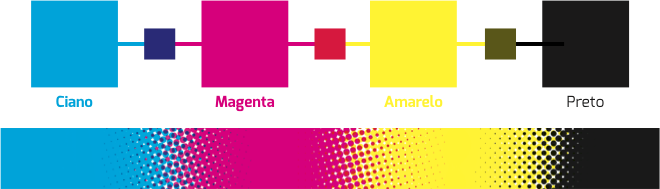

RGB e CMYK - Teoria das Cores
Introdução aos Modelos de Cor
Os modelos RGB e CMYK são fundamentais para a representação e manipulação de cores em diferentes contextos, como a exibição em telas e a impressão em papel. Vamos explorar como cada modelo funciona e como eles se aplicam ao design e à impressão.
Modelo RGB (Red, Green, Blue)
O modelo RGB é utilizado para representar cores em dispositivos que emitem luz, como monitores de computador, televisores, câmeras digitais e outros dispositivos eletrônicos. Ele é baseado na combinação de três cores primárias de luz: vermelho (Red), verde (Green) e azul (Blue).

Funcionamento do Pixel no RGB
Cada pixel em uma tela RGB é composto por subpixels de cores vermelha, verde e azul. A intensidade de cada cor varia de 0 a 255, criando uma gama de 16 milhões de cores possíveis. Quando os três subpixels emitem luz em diferentes intensidades, o resultado é a percepção de uma cor combinada.

Modelo CMYK (Cyan, Magenta, Yellow, Key/Black)
O modelo CMYK é utilizado em impressão, sendo uma abordagem subtrativa. Em vez de emitir luz como no modelo RGB, ele utiliza tintas (ou pigmentos) nas cores ciano (Cyan), magenta (Magenta), amarelo (Yellow) e preto (Key/Black) para criar uma vasta gama de cores.

Funcionamento da Impressão no CMYK
Ao contrário do modelo RGB, que combina luz para criar cores, o modelo CMYK combina tintas para subtrair a luz, resultando em diferentes cores dependendo da quantidade de tinta aplicada. O preto (K) é usado para criar sombras e melhorar o contraste, já que as tintas ciano, magenta e amarela não podem gerar preto puro.

Comparação entre RGB e CMYK
Embora tanto o RGB quanto o CMYK sejam usados para representar cores, eles funcionam de maneira muito diferente. O RGB é usado para displays de luz (como monitores), enquanto o CMYK é usado para impressões, que dependem de tintas. A principal diferença está no modo de mistura das cores:
- RGB: Sistema aditivo, onde as cores são criadas pela adição de luz nas cores primárias: vermelho, verde e azul.
- CMYK: Sistema subtrativo, onde as cores são criadas pela remoção de luz ao aplicar tintas ciano, magenta, amarelo e preto.
Exemplo Visual de RGB vs. CMYK